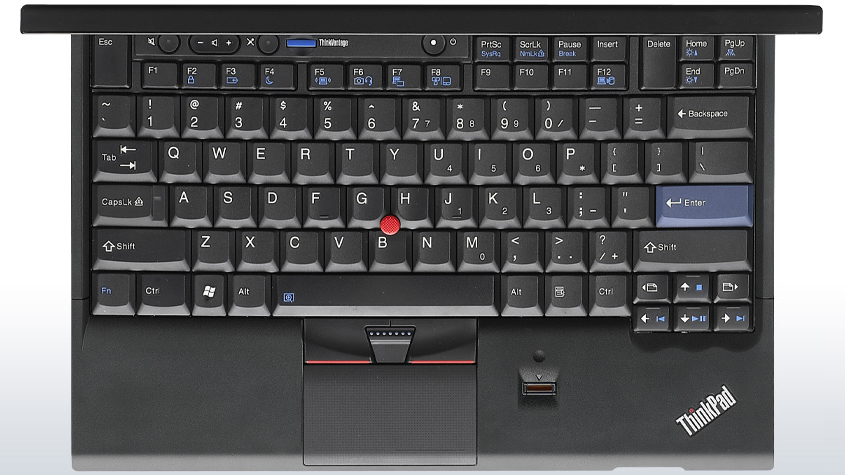

Going for a ThinkPad x220
Going for a ThinkPad x220
Looking for the perfect secondary laptop
I've been looking for a second hand laptop to use at home and for travelling for a while, so that I wouldn't have to carry my primary laptop from and to work every day.
I've been using a ThinkPad t440s for the last 2 years, and I'm really happy with it. The keyboard - while being a chiclet keyboard - feels really good, the laptop is quite lightweight and slim for a 14 inches, and the IPS matte screen is amazing: it has very good viewing angles, a high resolution, and vibrant colors. However, I'm not happy at all with the trackpad, which lacks physical buttons, making the trackpoint pretty useless on this machine, a shame for a ThinkPad.

Figure 1: The keyboard of the ThinkPad x220
Going for a x220
After doing a bit of research, I decided to go for a refurbished ThinkPad x220. I found one in a local store in a very good shape, the laptop looks almost brand new, and it was pretty cheap (around 300€).
It didn't have an IPS panel when I bought it, which is now a must for me, so I bought one on Ebay. Same for the hard drive, I replaced it with an SSD.
Review
I think the x220 is an amazing little machine!
It sure looks a bit oldish, but I don't mind that, I actually like its "good old ThinkPad" style, and the laptop feels very durable.
I thought at first that a 12.5 inches display might be too small, but it's actually ok, and the IPS matte panel is of very good quality.
The laptop is lightweight, small and easy to carry, even if it's a bit thick, which makes it the perfect travel companion.
With a second generation Intel i7, 8Gb of RAM and a SSD, the machine is very responsive, actually almost as good as my t440s.
The battery life is quite decent for a 5 years old computer: I got 4.5 hours with Fedora, doing Emacs hacking, with a browser open and a few terminals, using Wifi and with the screen brightness at 80%. My x220 has the 6 cells battery, it still has about 80 percent of its original capacity, but I'm considering buying a brand new 9 cells battery to replace it.
What is really amazing with this ThinkPad is the keyboard. I thought that the keyboard on the t440s was very good, and well, the one on the x220 is so, so much better. It's not a chiclet keyboard, it's a full size keyboard, the key depth is very good and typing on it is a delight.
All in all, I think I actually like the x220 better than the t440s.
Sure, it's a bit thicker than the t440s, but both weight about the same, and it's smaller, which means that it's easier to carry around. Both have a good IPS matte display, with a better resolution for the t440s 14'' display, but the keyboard on the x220 is definitely superior.
comments powered by Disqus